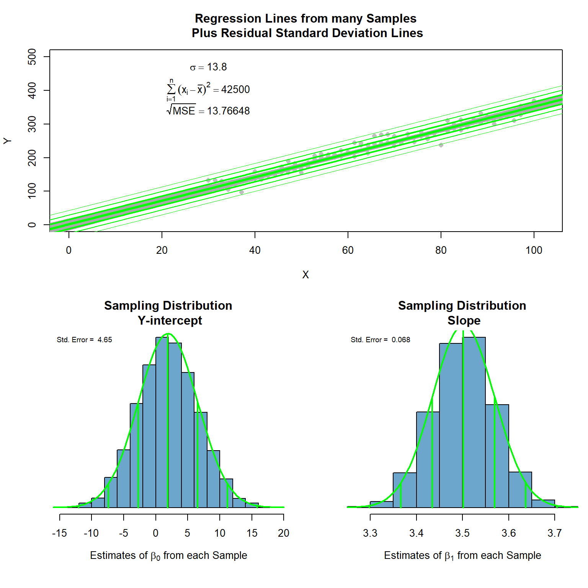

## Simulation to Show relationship between Standard Errors
##-----------------------------------------------
## Edit anything in this area...
n <- 100 #sample size
Xstart <- 30 #lower-bound for x-axis
Xstop <- 100 #upper-bound for x-axis
beta_0 <- 2 #choice of true y-intercept
beta_1 <- 3.5 #choice of true slope
sigma <- 13.8 #choice of st. deviation of error terms
## End of Editable area.
##-----------------------------------------------True Model
\[ Y_i = \overbrace{\beta_0}^{2} + \overbrace{\beta_1}^{3.5} X_i + \epsilon_i \quad \text{where} \ \epsilon_i \sim N(0, \overbrace{\sigma^2}^{\sigma=13.8}) \]
X <- rep(seq(Xstart,Xstop, length.out=n/2), each=2) #Create X
N <- 5000 #number of times to pull a random sample
storage_b0 <- storage_b1 <- storage_rmse <- rep(NA, N)
for (i in 1:N){
Y <- beta_0 + beta_1*X + rnorm(n, 0, sigma) #Sample Y from true model
mylm <- lm(Y ~ X)
storage_b0[i] <- coef(mylm)[1]
storage_b1[i] <- coef(mylm)[2]
storage_rmse[i] <- summary(mylm)$sigma
}
layout(matrix(c(1,1,2,3), 2, 2, byrow = TRUE), widths=c(2,2), heights=c(3,3))
Ystart <- 0 #min(0,min(Y))
Ystop <- 500 #max(max(Y), 0)
Yrange <- Ystop - Ystart
plot(Y ~ X, xlim=c(min(0,Xstart-2), max(0,Xstop+2)),
ylim=c(Ystart, Ystop), pch=16, col="gray",
main="Regression Lines from many Samples\n Plus Residual Standard Deviation Lines")
text(Xstart, Ystop, bquote(sigma == .(sigma)), pos=1)
text(Xstart, Ystop-.1*Yrange, bquote(sum ((x[i]-bar(x))^2, i==1, n) == .(var(X)*(n-1))), pos=1)
text(Xstart, Ystop-.25*Yrange, bquote(sqrt(MSE) == .(mean(storage_rmse))), pos=1)
for (i in 1:N){
abline(storage_b0[i], storage_b1[i], col="darkgray")
}
abline(beta_0, beta_1, col="green", lwd=3)
abline(beta_0+sigma, beta_1, col="green", lwd=2)
abline(beta_0-sigma, beta_1, col="green", lwd=2)
abline(beta_0+2*sigma, beta_1, col="green", lwd=1)
abline(beta_0-2*sigma, beta_1, col="green", lwd=1)
abline(beta_0+3*sigma, beta_1, col="green", lwd=.5)
abline(beta_0-3*sigma, beta_1, col="green", lwd=.5)
par(mai=c(1,.6,.5,.01))
addnorm <- function(m,s, col="firebrick"){
curve(dnorm(x, m, s), add=TRUE, col=col, lwd=2)
lines(c(m,m), c(0, dnorm(m,m,s)), lwd=2, col=col)
lines(rep(m-s,2), c(0, dnorm(m-s, m, s)), lwd=2, col=col)
lines(rep(m-2*s,2), c(0, dnorm(m-2*s, m, s)), lwd=2, col=col)
lines(rep(m-3*s,2), c(0, dnorm(m-3*s, m, s)), lwd=2, col=col)
lines(rep(m+s,2), c(0, dnorm(m+s, m, s)), lwd=2, col=col)
lines(rep(m+2*s,2), c(0, dnorm(m+2*s, m, s)), lwd=2, col=col)
lines(rep(m+3*s,2), c(0, dnorm(m+3*s, m, s)), lwd=2, col=col)
legend("topleft", legend=paste("Std. Error = ", round(s,3)), cex=0.7, bty="n")
}
h0 <- hist(storage_b0,
col="skyblue3",
main="Sampling Distribution\n Y-intercept",
xlab=expression(paste("Estimates of ", beta[0], " from each Sample")),
freq=FALSE, yaxt='n', ylab="")
m0 <- mean(storage_b0)
s0 <- sd(storage_b0)
addnorm(m0,s0, col="green")
h1 <- hist(storage_b1,
col="skyblue3",
main="Sampling Distribution\n Slope",
xlab=expression(paste("Estimates of ", beta[1], " from each Sample")),
freq=FALSE, yaxt='n', ylab="")
m1 <- mean(storage_b1)
s1 <- sd(storage_b1)
addnorm(m1,s1, col="green")